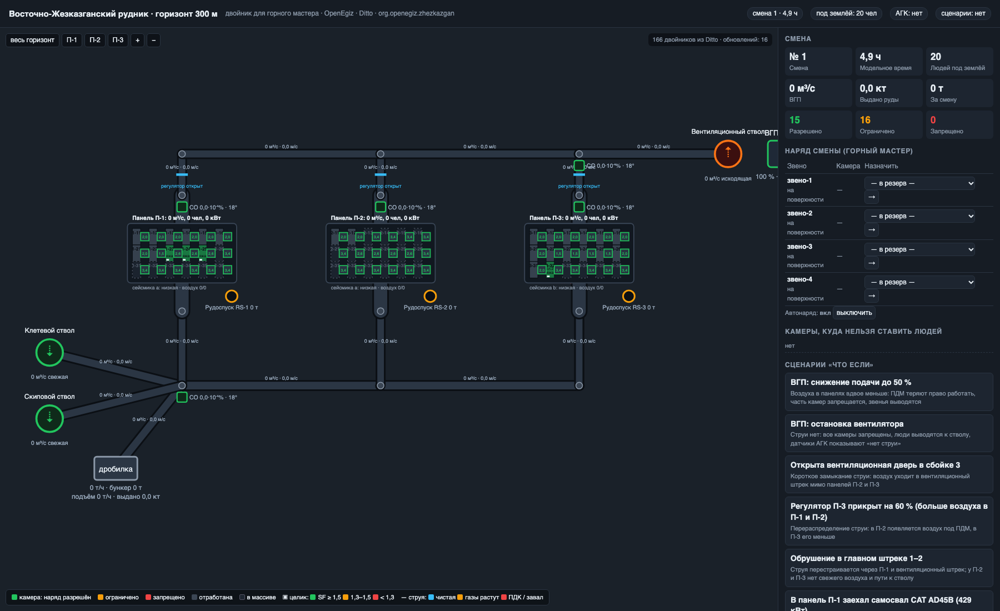
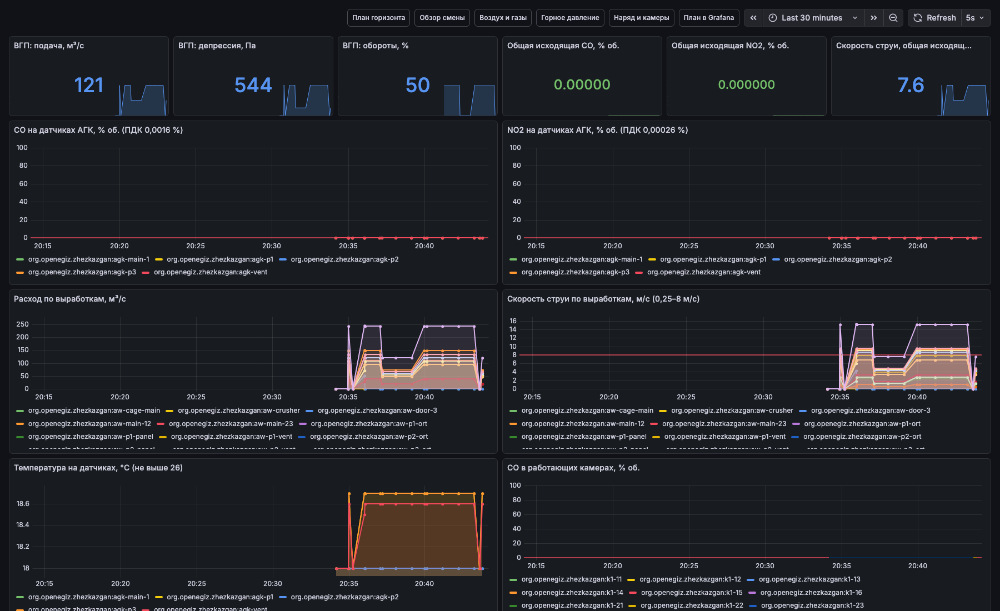
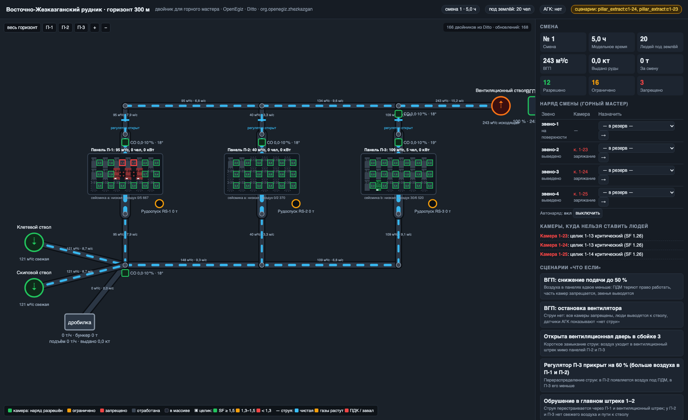
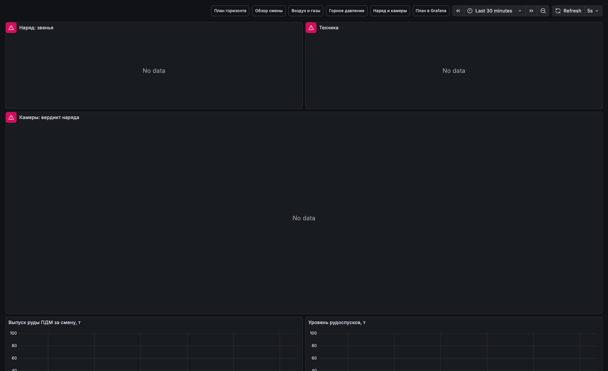
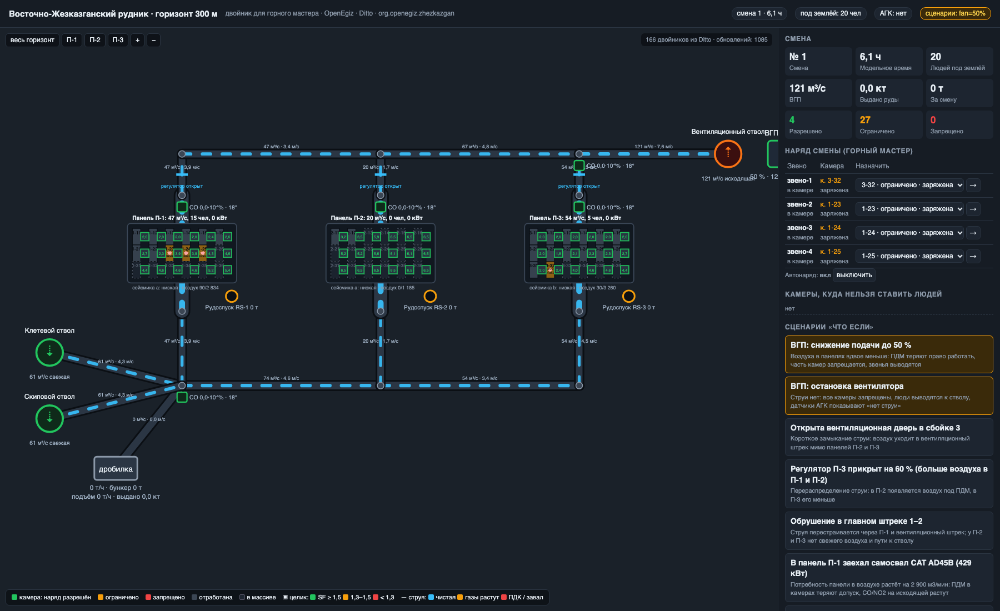

make mine · проверка: make mine-check1_parentstelemetry/<twin> (Ditto protocol) → Ditto → MQTT-события → Telegraf → InfluxDB → Grafana.
План горизонта читает двойники из Ditto (search API + события), команды мастера и сценарии уходят через MQTT в симулятор. Ядро платформы не изменено: overlay team/compose.yml, цели make mine, mine-check.





| Сценарий | Что меняется |
|---|---|
| ВГП 50 % / остановка | воздуха вдвое меньше / нет струи: ПДМ без допуска, камеры ограничены/запрещены, люди к стволу |
| Дверь в сбойке 3 открыта | короткое замыкание струи мимо П-2, П-3 |
| Регулятор П-3 прикрыт | воздух перераспределён: в П-2 допуск на ПДМ |
| Обрушение в штреке 1–2 | нет пути к стволу: П-2, П-3 запрещены |
| Самосвал 429 кВт в П-1 | +2 900 м³/мин потребности, CO/NO2 растут |
| Толчок 150 кДж в П-1 | эвакуация панели на 2 ч, целики повреждены |
| Выемка целика 1-24 | SF соседей падает, камеры закрываются |
| Отказ ВМП в 1-26 | камера запрещена, звено выведено |
| Наряд мастера | назначение звена; недопустимое — отклонено |
POST /api/command.| Параметр | Значение | Источник |
|---|---|---|
| Рудник | ВЖР: шахты 57, 73/75, 55, Анненская; проект 5 500 тыс. т/год; шахта 73/75 — 2 млн т/год; горизонт 300 м | программа ПЭК ВЖР; kazakhmys.kz; inform.kz; глубина горизонта — допущение |
| Система разработки | сетка целиков 20×20 м, пролёты ≤ 15,5 м, слои 4–5 м; камеры 10×20 м, целики 10×10 м | отчёт о практике, Южно-Жезказганский рудник; mining-enc.ru |
| Прочность целиков | Хедли–Грант, K = 0,7·UCS (UCS 110 МПа); σ = ρgH/(1−e); пороги SF 1,3 / 1,5 | Hedley & Grant (1972); SAIMM (K = 60–70 % UCS) |
| Сейсмичность | 0,73 / 1,10 толчка за смену, опасный толчок 4,9 % / 9,6 % смен, p90 8 700 Дж | seismic-bumps, UCI, CC BY 4.0 — копия в репозитории |
| Нормы воздуха | 6 м³/мин·чел, 6,8 м³/мин·кВт; CO 0,0016 %, NO2 0,00026 %, ≤ 26 °C, 0,25–8 м/с, ≥ 30 мин после взрыва | Техрегламент РК P090002207; методика расчёта расхода воздуха; NO2 — ФНП 505 (допущение) |
| ВГП, техника | ВОД-30 260 м³/с / 2 200 Па; ПДМ LH517i 352 кВт; CAT AD45B 429 кВт; СБУ DD421 | каталоги ВОД, Sandvik, Caterpillar; CAT AD45B на Жезказгане — inform.kz |
| Выбросы, взрыв, цикл | 6 г/кВт·ч CO, 2 г/кВт·ч NO2; 1 300 кг ВВ, 40 л CO/кг; звено 5 чел; хронометраж стадий | допущения; «в камере 4–6 человек» — со слов работника рудника |
sudo apt install -y make && make mine — платформа, двойники, симулятор, план, дашборды. make mine-check — сквозная проверка.make mine; просмотр открыт и без входа) → папка «ВЖР»: обзор смены, воздух и газы, горное давление и целики, наряд, план.org.openegiz.zhezkazgan.